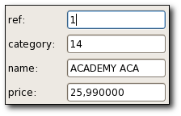
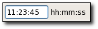
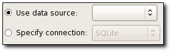
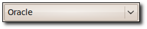
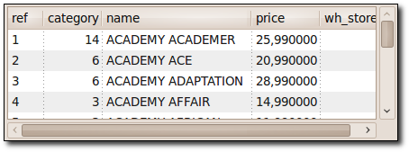
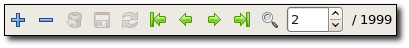
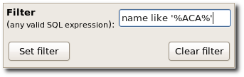
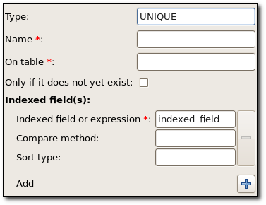
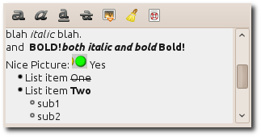

User interface API reference
Library initialization
— Library initialization and information
GdauiLogin
— Connection opening widget
GdauiProviderSelector
— Select a database provider from a combo box
GdauiDataSelector
— Selecting data in a
GdaDataModel
GdauiDataProxy
— Displaying and modifying data in a
GdaDataProxy
GdauiBasicForm
— Form widget mapping the values contained in a
GdaSet
GdauiForm
— Form widget to manipulate data in a
GdaDataModel
, with decorations
GdauiRawForm
— Form widget to manipulate data in a
GdaDataModel
GdauiGrid
— Grid widget to manipulate data in a
GdaDataModel
, with decorations
GdauiRawGrid
— Grid widget to manipulate data in a
GdaDataModel
GdauiCombo
— Combo box to choose from the contents of a
GdaDataModel
GdauiCloud
— Cloud widget
GdauiRtEditor
— Rich text editor which uses a subset of the txt2tags markup.
UI plugins
— Plugin to customize dana entry widgets and call renderers in tree views
GdauiDataEntry
— Data entry widget
GdauiDataStore
— Bridge between a
GdaDataModel
and a
GtkTreeModel
GdauiDataFilter
— Entrer rules to filter the rows in a
GdauiDataProxy
GdauiDataProxyInfo
— Shows information & actions about a
GdauiDataProxy
widget
GdauiServerOperation
— Enter information to perform a DDL query
GdauiTreeStore
— Bridge between a
GdaTree
and a
GtkTreeModel
UI Utility functions
— Set of UI related functions








